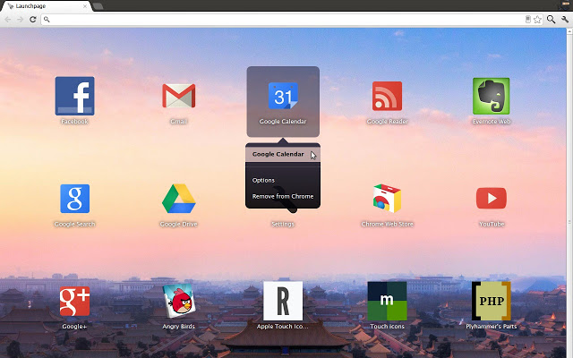
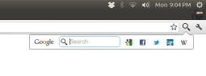

DOCTYPE html
alex_cordonnier
about
My name is Alex Cordonnier. I'm a Computer Science major at the University of Illinois at Urbana-Champaign, hailing from scenic Versailles, Ohio. I love to write programs and make websites, which I accomplish by making great projects, including both software and hardware. I also enjoy working on theater lighting.
about
dev_skills
- JavaScript
- HTML
- CSS
- jQuery
- Java
- C
- Visual Basic 2010
- Z80 assembly
- Arduino
- GitHub
- PHP
dev_skills
projects
dmx_project link="Hackaday Projects"
In February 2013, I started designing a peripheral for my TI-84 graphing calculator that would allow it to run theater lights over the DMX protocol. The idea is that the calculator sends changes in channel values to an Arduino, which processes the new channel value(s) while also transmitting DMX packets 44 times per second. The adapter is designed to be compatible with all calculators that can send data over the standard TI link port, which encompasses nearly all TI graphing calculators. I demonstrated the project at Engineering Open House 2014 using motorized DJ lights.
The project is available on GitHub and Hackaday Projects. It was featured on Hackaday on August 3, 2014.

Overview
dmx_project
launchpage link="Chrome Web Store"
In August 2011, I began work on an extension for Google Chrome to add a home screen of apps to the new tab page. In the summer of 2012, I finally published version 1.0 of Launchpage. I later published version 1.1, adding the ability to save any website to the home screen, and I'm working now on version 1.2, which will add several new features. Below is a screenshot and a link to the published extension on the Chrome Web Store. The link includes more screenshots and a more detailed description of its features.

launchpage
queria_toolbar link="Chrome Web Store"
Over the summer of 2011, I created a Google Chrome extension that adds a customizable search toolbar to Chrome. It was targeted at the portion of Chrome's user base that wanted the Google Toolbar to be ported to Chrome, which Google never created. Below is a screenshot and a link to the published extension on the Chrome Web Store. The link includes more screenshots and a more detailed description of its features.
Queria Toolbar - Chrome Web Store

queria_toolbar
eagle_project link="YouTube"
From March 2011 to March 2012, I designed and led others in building a portable training device as my Eagle Scout project for the Versailles Fire Department. Part of my project was documenting the setup and usage of the training wall through videos, available on YouTube, which are embedded below.
Training
Setup
eagle_project
projects
experience
co-op at="Midmark Corporation"
titleSoftware Engineering Co-optitle
timeMay 2014 to August 2014time
description
I worked as an embedded software developer, programming microcontrollers in C for products such as medical procedure chairs. Some of my projects included:
- Fixing bugs with several interfaces and fixing code to comply with the coding standard
- Writing hardware-interfacing code for a new board
- Writing unit tests and test protocols
- Writing and fixing documentation
- Writing macros to export information from project status report documents to a SharePoint dashboard
description
co-op
intern at="Midmark Corporation"
titleE-Marketing Interntitle
timeMay 2013 to May 2014time
description
I worked on several web development projects ranging in size. Some of my projects included:
- Creating an HTML5 version of the old Flash color selectors, including making them work on iPads. Links: Medical, Dental, and Animal Health
- Developing a new Dental color selector from the ground up, especially for use on a 42" touchscreen at tradeshows
- Making an offline version of midmarkclinicalsolutions.com for the sales representatives' iPads and tablet PCs
- Creating HTML5 versions of three Flash banners at midmarkanimalhealth.com
- Making various content edits to the corporate website, midmark.com
description
intern
webmaster at="Plyhammer's Parts, LLC"
titleWebmaster/Web Developertitle
timeFebruary 2011 to presenttime
description
I built, set up, and maintain an online store for a local client who sells Porsche parts. It is hosted at plyhammersparts.biz. I also set up and manage social media profiles such as Facebook, Twitter, and YouTube for the company.
Background
In February 2011, my former teacher and cross country coach, Mark Pleiman, asked me if I knew how to make a website. He told me he was starting a business to buy old Porsches and sell the parts, and he wanted to sell the parts on a more professional website than eBay. He gave me his business card and told me that he would pay me if I could build a website for him. I had been coding in HTML for years, but I had never created a website before.
I searched around to find the various options for shopping cart software, and the one I chose to use was Zen Cart. I then downloaded a copy of Zen Cart and went to work modifying it to suit my client's needs. I changed the stylesheets to match the style of the business card, but I also needed to modify some of the PHP code to make the website work as my client wanted it to work. However, since I didn't know any PHP, I researched about it until I had enough skills to tackle the website. I have since researched more about PHP, but I still have a lot to learn about it.
Once the website was ready, I set up hosting and registered the domain for my client. He trusts me with all the information I need to set up automatic bill payment for the hosting and registration. After I set up the main website, I also set up a hosted WordPress blog as well as all of the social media accounts I listed above. Once everything was in place, I spent a day teaching him and his wife how to use the software to manage the online store. In 2012, the website averaged 11,390 requests per month.
description
webmaster
timer at="Versailles Athletic Department"
titleElectronic Track Timertitle
timeMarch 2011 to May 2013time
description
I set up and ran the electronic timing system at home track meets. Some of my duties included:
- Detecting the flash from the starter's gun using a flash sensor
- Capturing each race on video on the computer
- Analyzing each race to determine the finish time of each runner
- Importing the timing data from each race into the meet manager software and resolving any issues or discrepancies with the timing results
- Typing the scores from each of the field events into the meet manager software
The timing team used two programs to run each meet. We used Eagle Eye to record and analyze races and Hy-Tek Meet Manager to calculate the scoring, placing, results, seeding, etc. of the meet.
description
timer
lighting_tech at="Versailles Performing Arts Center"
titleSenior Lighting Coordinatortitle
timeSeptember 2010 to July 2013time
description
I volunteered at my high school's theater to set up, program, and run the lighting system for several performances throughout the year. I also coordinated the lighting crew to make sure someone would be available to run the lights for each show. From September 2010 to February 2013, the light board that I used was a Bijou Plus 48/96. Although it was not a fancy piece of equipment, it got the job done until it started malfunctioning. In February 2013, the school installed a new software-based lighting system using a program called Light Factory. I was the first of the lighting crew to embrace the new system and to learn how to use it for the shows following the new installation. Using Light Factory, I was able to set up music-synchronized lights for a showchoir performance, which was a huge hit. This would never have been possible with the Bijou light board.
List of performances
These are some of the performances and performers for which I was the lighting designer/technician:
- Darke County Center for the Arts-sponsored performance of Sleeping Beauty by American Family Theater
- Towne and Country Players' production of The Wedding Singer
- Franc D'Ambrosio, the singer who played the Phantom in The Phantom of the Opera on Broadway
- The United States Air Force Band of Flight
- Nationally-touring a capella group Ball in the House
- Elvis tribute band Comeback Special
- Thoroughly Modern Millie
- Cap'n Hook
- Grease
- The Trials of Robin Hood
- The Sound of Music
- M*A*S*H
- Many performances by the Versailles High School showchoir called Encore!
For some of these performances, I worked with famous performers and directors that I would never have been able to meet if I would not have been part of the technical crew at the theater. I also had the opportunity to work with lighting and sound professionals, and they taught me much more about lighting than I could have learned on my own.
description
lighting_tech
experience
education
undergrad at="University of Illinois at Urbana‑Champaign"
timeAugust 2013 to presenttime
expected_graduationMay 2017expected_graduation
GPA3.55GPA
description
I am currently attending the University of Illinois at Urbana-Champaign, pursuing a Bachelor of Science in Computer Science. I'm also in the James Scholar honors program.
description
classes
- CS 125 - Intro to Computer Science
- CS 173 - Discrete Structures
- CS 225 - Data Structures (in progress)
- CS 398 (233) - Computer Architecture (in progress)
- MATH 241 Honors - Calculus III
- MATH 415 - Linear Algebra
classes
undergrad
high_school at="Versailles High School"
timeAugust 2009 to May 2013time
GPA4.000GPA
rank1 of 109rank
scores
ACT composite: 34 (06/2012)
- Reading: 35 (06/2011)
- English: 35 (06/2012)
- Math: 35 (06/2012)
- Science: 34 (06/2010)
- Writing: 8 (06/2010)
SAT composite: 2200 (01/2012)
- Reading: 730 (01/2012)
- Math: 720 (01/2012)
- Writing: 750 (01/2012)
SAT Subject Tests:
- Math II: 800 (06/2012)
- Biology (Molecular): 780 (06/2012)
AP:
- Calculus AB: 4 (05/2012)
- Calculus BC: 5 (05/2013)
scores
other
Grading scale: 95–100% = A
National Merit Finalist: 2012/2013
Honor Roll: 9, 10, 11, 12
other
high_school
education
résumé
Want my résumé? Just print this page if you're on a modern browser. You can also download the PDF.
Want my résumé? Download the PDF.
résumé
connect